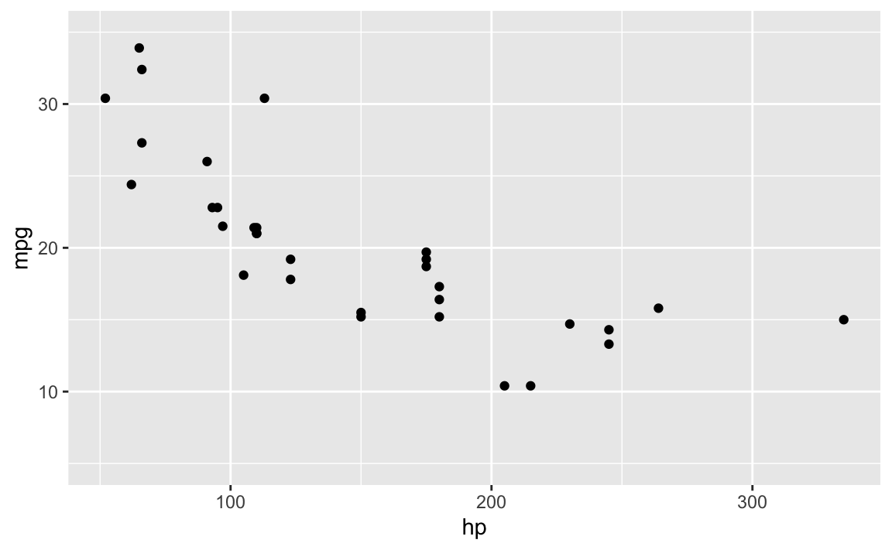

<<<<<<< HEAD
=======
>>>>>>> 5520f36 (Merge)
Über die Koeffizienten einer linearen Regression – Norman’s Academic Blog
<<<<<<< HEAD
=======
>>>>>>> 5520f36 (Merge)
Über die Koeffizienten einer linearen Regression
Statistik
Autor:in
Norman Markgraf
Veröffentlichungsdatum
9. Juni 2021
Geändert
3. Dezember 2025
Bei einer einfachen Regression versuchen wir zu gegebenen Datenpunkten \((x_1, y_1), ..., (x_n, y_n)\) eine möglichst passende Funktion \(g(x)\) zu finden, so dass \[y_i = g(x_i) + e_i\] gilt. Dabei tolerieren wir eine (kleine) Abweichung \(e_i\).
Bei einer einfachen linearen Regression gehen wir davon aus, dass die Datenpunkte (im wesentlichen) auf einer Geraden liegen. Mit \(g(x)=\beta_0 + \beta1 \cdot x\) ergibt sich dann für die Datenpunkte die Gleichung:
\[y_i = \beta_0 + \beta_1 \cdot x_i + e_i\]
Unsere Aufgabe besteht nun darin die Parameter \(\beta_0\) (y-Achsenabschnitt) und \(\beta_1\) (Steigung) an Hand der \(n\) Datenpunkte zu schätzen. Alle unsere Schätzungen kennzeichnen wir mit einem Dach (\(\hat{.}\)), um sie von den (in der Regel unbekannten) Parametern besser zu unterscheiden.
Wir suchen somit nach \(\hat\beta= \left(\hat\beta_0,\, \hat\beta_1\right)\), so dass die Gerade \(\hat\beta_0 + \hat\beta_1 \cdot x\) zu gegebenem \(x_i\) eine möglichst gute Schätzung von \(y_i\) (genannt \(\hat{y}_i\)) hat:
Gesucht wird \(\hat\beta=\left(\hat\beta_0,\,\hat\beta_1\right)\), so das \(QS\) minimiert wird.
Dies ist ein Minimierungsproblem, bei dem wir zu mindestens eine (exakte) mathematisch-algebraisch Lösung in Form eines stationären Punktes finden können. Dazu berechnen wir die Nullstelle der ersten partiellen Ableitung von \(QS\) nach \(\hat\beta_0\) bzw. \(\hat\beta_1\).
Vorbemerkungen
Wegen \(\bar{x} = \frac{1}{n} \sum\limits_{i=1}^n x_i\) ist \(n \cdot \bar{x} =\sum\limits_{i=1}^n x_i\) und analog \(n \cdot \bar{y} =\sum\limits_{i=1}^n y_i\)
Damit können wir zur Berechnung sowohl die Kovarianz der Grundgesamtheit \(\sigma_{x,y}\) und die Varianz \(\sigma^2_x\) von \(x\), als auch deren Schätzer \(s_{x,y}\) und \(s^2_x\) verwendet werden!
Diese Methode nennt sich Methode der kleinsten Quadrate (engl. ordenary least square method) und wir sprechen dann auch von den Kleinste-Quadrate-Schätzern (oder kurz KQ-Schätzer bzw. OLS-Schätzer) \(\hat\beta_0\) und \(\hat\beta_1\).
Erweitern wir den Ausdruck mit Standardabweichung \(\sigma_y\) bzw. \(s_y\), so erhalten wir:
Die Steigung \(\hat\beta_1\) hat somit eine direkte Beziehung mit dem Korrelationskoeffizenten\(\rho\) (der Grundgesamtheit) bzw. \(r\) (der Stichprobe).
Für eine Berechnung in R heißt dies: wir können die Regressionskoeffizienten \(\hat\beta_0\) und \(\hat\beta_1\) direkt algebraisch ausrechnen, wenn wir
die Standardabweichungen von \(x\) und \(y\) und den Korrelationskoeffizienten oder
die Varianz von \(x\) und Kovarianz von \(x\) und \(y\)
haben.
Ein Beispiel in R:
Auf Grundlage der Datentabelle mtcars wollen wir Prüfen wie ein linearer Zusammenhang zwischen dem Verbrauch (in Meilen pro Gallone mpg) und der Leistung (Pferdestärke hp) modelliert werden kann.1
library(mosaic)# Wir nehmen die Datentabelle 'mtcars':mtcars %>%select(hp, mpg) -> dt# Ein kurzer Blick auf die Daten:favstats(~ hp, data = dt)[c("mean","sd")]#> mean sd#> 146.6875 68.56287favstats(~ mpg, data = dt)[c("mean","sd")]#> mean sd#> 20.09062 6.026948# Wir vergleichen den Verbrauch (mpg, miles per gallon) # mit den Pferdestärken (hp) mit Hilfe eines Streudiagramms:gf_point(mpg ~ hp, data = dt) %>%gf_lims(y =c(5,35))

Berechnen wir zunächst die Mittelwerte von \(x\) (also ‘hp’) und \(y\) (also ‘mpg’)
(mean_hp <-mean(~ hp, data = dt))#> [1] 146.6875(mean_mpg <-mean(~ mpg, data = dt))#> [1] 20.09062
und zeichnen die Punkt \((\bar{x}, \bar{y}) = (146.69, 20.09)\) in unser Streudiagramm ein:
gf_point(mpg ~ hp, data = dt) %>%gf_hline(yintercept =~ mean_mpg, color ="grey60", linetype ="dashed") %>%gf_vline(xintercept =~ mean_hp, color ="grey60", linetype ="dashed") %>%gf_point(mean_mpg ~ mean_hp, color ="red", size =5, alpha =0.2) %>%gf_lims(y =c(5,35))
Berechnen wir nun die Schätzwerte für die Regressionsgerade
so erhalten wir die Schätzwerte des ursprünglichen Problem.
Ein anderer Weg um die Regressionskoeffizenten zu bestimmen…
Gehen wir das Problem noch einmal neu an. Wir suchen \(\hat\beta=(\hat\beta_0, \hat\beta_1)\) welches \(QS(\hat\beta) = QS(\hat\beta_0, \hat\beta_1) = \sum\limits_{i=1}^n \left(\hat\beta_0 + \hat\beta_1 \cdot x_i - y_i \right)^2\) minimiert.
Statt es direkt, wie oben durch Null setzen der partiellen Ableitungen, zu bestimmen, wählen wir nun einen mathematisch-numerischen Ansatz und wollen \(\hat\beta \in \mathbf{R}^2\) als Optimierungsproblem mit Hilfe des Gradientenverfahrens lösen.
Beim Gradientenverfahren wird versucht, ausgehend von einem Startwert \(\hat\beta^0 \in \mathbf{R}^2\), gemäß der Iterationsvorschrift
für alle \(k=0,1, ...\) eine Näherungslösung für \(\hat\beta\) zu finden. Dabei ist \(\alpha^k > 0\) eine positive Schrittweite und \(d^k\in\mathbf{R}^n\) eine Abstiegsrichtung, welche wir in jedem Iterationsschritt \(k\) so bestimmen, dass die Folge \(\hat\beta^k\) zu einem stationären Punkt, unserer Näherungslösung, konvergiert.
Im einfachsten Fall, dem Verfahren des steilsten Abstieges, wird der Abstiegsvektor \(d^k\) aus dem Gradienten \(\nabla QS\) wie folgt bestimmt:
\[
d^k = -\nabla QS\left(\hat\beta^k\right)
\]
Wegen \[
\frac{\partial}{\partial \hat\beta_0} \, QS = 2 \cdot n \cdot \left( \hat\beta_0 + \hat\beta_1\cdot\bar{x} - \bar{y} \right)
\]
Wir wollen hier von Anfang an mit den studentisierten Werten arbeiten, weil diese numerisch viele Vorteile haben. Darum vereinfachen sich die beiden partiellen Ableitungen noch einmal zu:
\[
\frac{\partial}{\partial \hat\beta_0} \, QS = 2 \cdot v
\]
Um die Varianz und die Kovarianz nicht jedesmal neu zu berechnen, speichern wir die Ergebnisse vorab. Ebenso, damit der Quellcode kürzer wird, speichern wir in \(x\) und \(y\) die studentisierten Werte von \(hp\) und \(mpg\):
# Vorbereitungen var_x <-var(~ hp_stud, data = dt)cov_xy <-cov(mpg_stud ~ hp_stud, data = dt)n <-length(dt$hp_stud)x <- dt$hp_study <- dt$mpg_stud
Nun erstellen wir die \(QS\) und \(\nabla QS\) Funktionen: Wir definieren diese Funktion wie folgt in R:
Die Schrittweite \(alpha\) bestimmen wir mit Hilfe der Armijo-Bedingung und der Backtracking Liniensuche: Diese formalisiert das Konzept “genügend” in der geforderten Verringerung des Funktionswertes. Die Bedingung \(f(x^k + \alpha d^k) < f(x^k)\) wird modifiziert zu \[f(x^k + \alpha d^k) \leq f(x^k) + \sigma \alpha \left(\nabla f(x^k)\right)^T d^k,\] mit \(\sigma\in (0,1)\). Die Armijo-Bedingung umgeht Konvergenzprobleme der einfachen Bedingung, indem sie fordert, dass die Verringerung zumindest proportional zur Schrittweite und zur Richtungsableitung \(\left(\nabla f(x^k)\right)^T d^k\) ist, mit Hilfe der Proportionalitätskonstante \(\sigma\). In der Praxis werden oft sehr kleine Werte verwendet, z.B. \(\sigma=0.0001\).
Die Backtracking-Liniensuche verringert die Schrittweite wiederholt um den Faktor \(\rho\) (rho) , bis die Armijo-Bedingung erfüllt ist. Sie terminiert garantiert nach einer endlichen Anzahl von Schritten. Weshalb wir sie hier einsetzen:
Für eine vorgegebene Genauigkeit \(eps=10^{-6}\), den Startwerten \(\hat\beta_0^0 = 0\) und \(\hat\beta_1^0 = -1\) können wir somit das Verfahren starten:
Die Geradengleichung für das ursprüngliches Problem lautet somit:
\[
\begin{aligned}
\hat{y} &= \hat\beta_0 + \hat\beta_1 \cdot x \\
&\approx 30.0988668 -0.0682283 \cdot x \\
&\approx 30.099 -0.068 \cdot x
\end{aligned}
\]
Die R Funktion optim
In R gibt es bessere Optimierungsmethoden, als die hier verwendete. Zum Beispiel können wir die Funktion optim verwenden. Die Funktion optim benötigt die zu optimierende \(f(x)\) und ggf. die Gradientenfunktion \(gf(x)\) sowie einen Startpunkt \(x^0\):
f <-function(beta) {qs(beta[1], beta[2])}grf <-function(beta) {nabla_qs(beta[1], beta[2])}# Der eigentliche Aufruf von optim:ergb <-optim(c(0,-0.5),f ,grf, method ="CG")# Auslesen der Schätzer aus dem Ergebnis:(optim_beta_0 <- ergb$par[1])#> [1] 0(optim_beta_1 <- ergb$par[2])#> [1] -0.7761683
Wir erhalten somit für das studentisierte Problem die Gerade:
Schauen wir uns nun die so erhaltene Gerade im Vergleich mit der ‘normalen’ Regressionsgerade an:
In grün und gestrichelt sehen wir die Gerade aus der Idee der quadratischen Abweichungssummen, in blau die aus der Idee der absoluten Abweichungssummen.
Die Funktionsvorschrift für die (blaue) Regressionsgerade lautet:
\[
\begin{aligned}
\hat{y} &= \hat\beta_0 + \hat\beta_1 \cdot x \\
&\approx 28.1305094 -0.0601695 \cdot x \\
&\approx 28.131 -0.06 \cdot x
\end{aligned}
\]
Diese Methode nennt sich Median-Regression und ein ein Spezialfall der Quantilsregression, die sich u.a. mit dem R-Paket quantreg unmittelbar umsetzen lässt:
library(quantreg)ergmedianreg <-rq(mpg ~ hp, data = dt)coef(ergmedianreg)#> (Intercept) hp #> 28.13050847 -0.06016949
1. Idee: Betrag der Summe der Abweichungen
Wenn wir die Summe der Abweichungen \(\sum\limits_{i=1}^n \hat{e}_i\) minimieren wollen, dann ist es sinnvoll den Betrag davon zu minimieren. Wir suchen also die Schätzer \(\hat\beta_0\) und \(\hat\beta_1\), so dass der Ausdruck
können wir das absolute Minimum bei \(\hat\beta_0 - \bar{y} =0\) und \(\hat\beta_1 \cdot \bar{x}=0\) erreichen, was zur Lösung \(\hat\beta_0 =\bar{y}\) und \(\hat\beta_1 = 0\) führt. Dies ist unser Nullmodel in dem die \(x_i\) keinen Einfluss auf die \(y_i\) haben und wir daher pauschal die \(y_i\) mit \(\hat{y}_i=\bar{y}\), also dem Mittelwert der \(y_i\) abschätzen.
Zusammenfassung
Als Vergleich können wir uns die Quadratsumme \(QS\) und Absolutsumme \(AS\) der drei Modelle einmal ansehen: